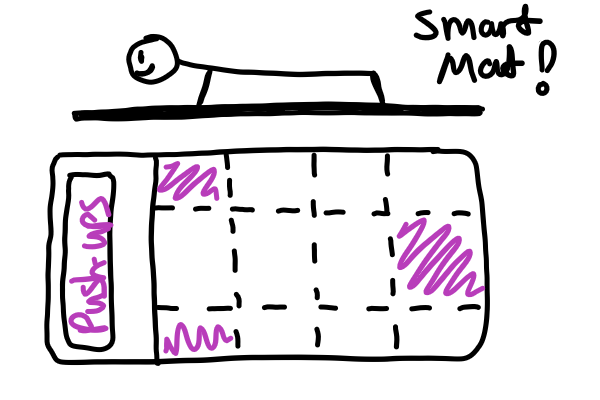

Why did we design Life as a Gym?
Our motivation for creating LG is a combination of several different factors. Prior to deciding to go with Life as a Gym glasses as our concept, we conducted background research in various topics; one of the statistics we found was approximately 40-50% of all college students do not get the recommended amount of physical activity, that is, they do not do enough physical activity in a given day to constitute exercise from a medical perspective. We found this statistic to be shocking, and we knew we could make a difference if we challenged this problem from a user experience point of view.
Product Features
Life as a Gym Glasses have 6 distinct features which make up the product.

Augmented Reality (AR) Camera's
AR Camera's actively scan the environment and enable the AR interaction

Schedule and Time Integration
LG integrates itself into your schedule; knowing where you need to be and when

Navigation
LG has built in navigation which guides users during their walking and running exercises

Voice & Input Assist
Users can hear LG glasses speak and can give the glasses commands through their voice

Exercise Moments
LG smartly manages your time and recommends activities and exercises that fit into your schedule

Companion App
Comes with a companion application which provides additional info and challenges.
Ideal System Concept
Life as a Gym (LG) is an AR-based service that can fit exercise opportunities into users’ daily schedule through a pair of smart glasses. Through cameras, sensors and GPS technology, LG can scan the environment, guide users to their destination, and recommend exercise opportunities along the way. Users can interact with LG through the glasses and a companion app. The data collected by the glasses and inputted from the mobile app would be stored in databases. There will also be a database for exercise sites that LG can access and provide recommendations based on the data it has.
How Did We Get Here?
Life as a Gym took a bit of a deviation from the standard design process; here we had to really focus on the iteration aspect of our product, and work through changing the basic of the premise several times. However, we still used the same basic structure of research, design, and iteration to create our final product.

Research
Looking at secondary sources and conducting user interviews to learn more about the target audience

Design
Translating the research findings into a product/service which fulfills the needs and goals of users

Iteration
Creating a loop of constant research, design, and feedback to help improve the design through multiple iterations
Initial Research Process
To gain a better understanding of our target audience, we developed 5 distinct research questions which needed to be answered. We then chose 2 initial research methodologies to help answers these 5 questions, they were as follows:

Surveys
How do students learn exercises?
What exercises do students do?
What tools do students use when exercising?

Diary Studies
What motivates students to exercise?
What factors prevent students from exercising daily?
Surveys - Deep Dive
To answer 3 of our research questions, we decided to use a survey. We chose this method because the questions we needed to collect data on could be easily represented by simple, close-ended questions. Additionally, the questions we asked required quantitative data to back up the responses to make sure any design decisions based on these had validity. Below are some of the results of the types of questions we asked.
What type of exercise activities do you habitually do?

What resources do you use to learn exercises?
What barriers prevent you from exercising?
What motivates you to exercise?

Diary Studies - Deep Dive
To answer the remaining 2 research questions we developed, we decided to use a Diary Study. Diary studies are a way to collect consistent data throughout a period of time by sending respondents some type of form to fill out on a daily or sometimes more frequent basis. We chose this type of research because we wanted to see how people's behaviors and motivations change from day-to-day when it comes to exercising. The diary study also helped us learn more about topics which cannot easily be tackled in a survey, due to the open-ended nature of the questions. Below is an example of the form we sent to respondents, and some of the data we received from our diary study.
Initial Research Results
After conducting the first round of our research, we analyzed our data and tried to find trends and patterns to guide our design process. From that analysis found the following trends:

Time Management
People feel they don't have enough time or are too busy to exercise enough.
Endurance & Strength
Endurance and Strength exercises were the most prominent forms of exercise amongst our participants.

Guidance is Needed
People often need guidance when doing exercises to learn how to do them correctly
Design Process
Our design process for this project consisted of 3 major steps:

Ideation
Generating as many ideas as possible, then narrowing down ideas based on research data

Feedback
Putting designs in front of users and getting their feedback about our proposed solution
Prototyping
Creating a workable mockup which demonstrates our system concept for potential users
Ideation - Deep Dive
The ideation process for this project was especially difficult because there are so many potential ways to solve the problem of increasing exercise. To create our new project proposals, we took all of the data we gathered from our diary studies and survey, and highlighted some of the key factors that appeared in both. These key factors included time management, endurance and strength training, and the need for guidance during exercise.
After this distillation, we began a second ideation phase where each group member would create new project concepts based on the information we learned; ideas were then shared, selected based on commonalities, and then fleshed out. We narrowed down to the three solutions based on feasibility and how close they aligned to our initial research findings
Idea 1: A smart exercise mat
The Mat is infused with LED panels which helps guide users through various exercises
Idea 2: AR/VR Exercise Glasses
A pair of glasses which actively scan the environment and alert the user to different exercise opportunities
Idea 3: Exercise Form Correcter
A camera which actively monitors users as they do exercises and provides guidance on how to correct their form
Narrowing the Selection
After taking our design concepts and putting them in front of other UX professionals and potential users, we decided to pursue our smart exercise glasses. We went in this direction for 2 reasons, first, time management was by far the most consistent issue found throughout our studies, and our smart exercise glasses addressed this problem best. Second, we wanted to take a different approach to solving this problem; smart gym equipment already exists, and we didn't feel we had a unique angle to make a difference.
More Research Needed - User Enactments
After narrowing down our ideation to our Life as a Gym concept, we needed to conduct additional research to flesh out the concept and discover our users thoughts and feelings regarding the AR/VR experience. To learn more about this we decided to conduct user enactments. User enactments have users going through a set of different real-world use case scenarios, and seeing how they understand and respond to the activities they perform. For our user enactments we created 8 scenarious which were each designed to solicit feedback about a particular feature or design decision. The subjects of these scenarios included privacy, public exercise, trip planning, navigation, system input types (audio, touch, gesture), and more.
After conducting our user enactments, we took all of our notes, observation data, and feedback from users and created a series of around 200 affinity notes. We then took these notes and categorized them based on their content until we had a series of common themes.
Our findings from creating our affinity wall helped us learn a lot of new information about our users, our new findings were as follows:
Solo vs Group Experience
Users want LG glasses to be a solo experience and found group activity socially unacceptable

Privacy Concerns
Data collected should only be for exercises, no other personal information should be collected
Input Method
Voice commands were the primary method of input for LG glasses
Automated vs Manual
The glasses should be able to automate things during workout activies

Motivation & Achievement
Motivating feedback is a must during and after completing exercise activities
New Design Direction
After finishing our second round of study, we realized that our design concept which we presented to users was deeply flawed. We re-examined all of our findings and our current system version, and determined that our current concept did not meet the expectation of our users in terms of functionality or usability. We decided to strip our current design of several features, such as the built-in social interaction aspect, and re-focused our concept into a much simpler, streamlines experience. With this new mindset, we worked on creating a prototype using AR to prove our concept.
Prototyping
To create our prototype, we utilized a few technical tools. First, a framework called A-Frame, the backend of our system. A-Frame is a web-based VR framework, based on Javascript. It allows running a VR experience right in a browser window. In addition to this, we used an additional library call AR.js to add the AR layer and the ability to access the device camera. To duplicate allow users to experience our prototype, we used a Samsung Gear to create the experience.


Additionally, we needed to create a set of mockup screens which we could then add to the AR layer of our prototype. These screens were the product of all of the research we conducted previously in this project, especially our User Enactments, where we had users directly look at our previous designs and provide feedback to us. These are samples of several of the prototype screens we made, additional screenshots can be seen in our interactive demo.